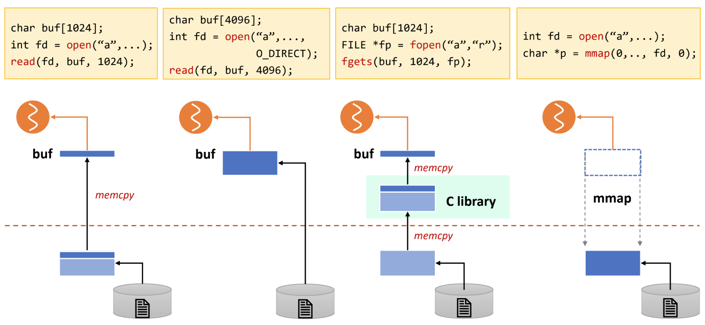
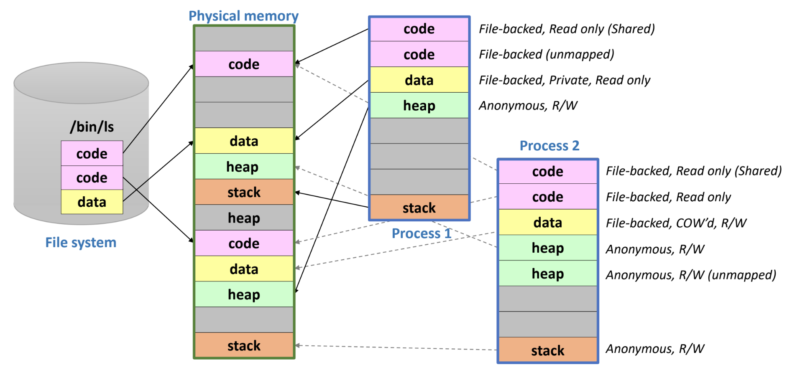

서울대학교 컴퓨터공학과 김진수 교수님의 "고급 운영체제" 강의를 필기한 내용입니다.
다소 잘못된 내용과 구어적 표현 이 포함되어 있을 수 있습니다.
Virtual Memory Area (VMA)
- Virtual Address Space (VAS) 는 process 별로 할당되는 하나의 자원이라고 봐야 한다.
- 만약 이 공간이 너무 작게 되면, 물리적인 메모리 공간이 많이 남아 있어도 process 는 더이상 추가적인 메모리 공간을 할당받을 수 없다.
- 이것이 32bit system 에서 64 bit system 으로 온 계기이다.
- 32bit system 에서는 이 address space 가 너무 작아서
- 만약 이 공간이 너무 작게 되면, 물리적인 메모리 공간이 많이 남아 있어도 process 는 더이상 추가적인 메모리 공간을 할당받을 수 없다.
- Virtual Memory Area (VMA) 는 이 VAS 내의 공간을 의미한다.
- 뭐 code/data/heap/stack 같은 애들이 다 VMA 인 것.
- Virtual memory 는 기본적으로 메모리에 접근하기 위한 window (창구) 로서 기능한다.
- 그래서 디스크의 파일을 virtual memory space 에 연결시켜 파일 접근을 하거나
- 즉, VAS - PAS - Disk 이렇게 연결
- 하나의 PAS 공간을 각각의 VAS 에 연결해서 shared 하거나
- VAS 를 GPU memory 에 연결해 접근하는 등
- 그래서 디스크의 파일을 virtual memory space 에 연결시켜 파일 접근을 하거나
Mapping type
File vs Anonymous
- File mapping
- Disk 의 file 을 메모리에 올린 것
- 그래서 replace 시에 해당 disk 공간으로 내리거나 write 되지 않았으면 그냥 버려버릴 수 있는 공간이다.
- 예를 들면 VAS 에서 code 영역이 대표적이지
- Anonymous mapping
- 어떤 disk 공간과도 연관되지 않은 메모리 영역
- 예를 들면 VAS 에서 stack 이나 heap 영역이 대표적이다.
- 그래서 replace 시에는 disk 내의 swap 영역으로 내린다.
- 대략 이런식으로 처리된다.
- 메모리 공간에는 0 으로 채워진 frame 이 있는데 (이 공간을 편의상 0-frame 이라 하자.)
- Heap 으로 예시를 들자면 처음 heap 공간을 할당받고 read 를 하면 page fault 가 나며 해당 vaddr 를 0-frame 의 paddr 로 매핑한다.
- 그리고 이후에 write 를 하면 copy-on-write 정책에 따라 다른 frame 을 할당받아 0-frame 을 복사하고 page table 을 고쳐서 접근하여 write 될 수 있게 한다.
- 어떤 disk 공간과도 연관되지 않은 메모리 영역
Shared vs Private
- Shared mapping 은 동일한 paddr 를 두 vaddr 에 매핑해 놓은 것을 말하고
- Private mapping 은 동일한 paddr 를 바라보다가 한놈이 write 해서 별도로 분리된 (COW) paddr 에 매핑되어 있는 것을 말한다.
- 즉, 위 두가지는 COW 를 사용할 것이냐 아니냐에 따라 달라지게 되는 것
Memory Mapping (MMAP)
- Memory Mapping (MMAP) 은 (1) 동적으로 할당된 (2) backing store 가 있는 (3) VMA 내의 공간이다.
- 여기서의 backing store 는 실제 file 일 수도 있고 (file-backed), 없을 수도 있다 (anonymous).

mmap()syscall 로 MMAP 을 수행할 수 있고, 위 그림과 같다고 한다.addr: 이것은 hint 다; NULL 로 주면 kernel 이 알아서 설정length: paging 이 사용되기에 당연히 page size 의 배수prot: protection 정보 (RW, RO 등)flag: 모드 (Private, Shared, 등)fd,offset: file mapping 을 할 때 사용 - 열려있는 파일의 file discriptor 와 시작주소를 넘겨줌- return 값은 할당된 공간의 virtual addr 다
- MMAP 은 VMA 를 생성하는 것이고 실질적으로 paddr 에는 매핑되지 않는다.
- Physical 로 mapping 되는 것은 mmap 공간에 접근하여 page fault 가 발생한 시점이다.
- 이전에 MMAP 에 대해 좀 헷갈렸던게 memory 공간과 file 이 직통으로 연결되어 있냐 였는데 그건 아니다.
- MMAP 은 VMA 로서 존재하고 여기에 연결된 paddr 는
openPOSIX API 를 통해 memory 상에 적재된 file 의 paddr 이다.
- MMAP 은 VMA 로서 존재하고 여기에 연결된 paddr 는
- MMAP 의 장점은
- File access 를 memory access API 로 할 수 있다는 것이다.
- MMAP 을 사용하지 않았다면 POSIX API (
read,write) 로 파일을 접근해야 하는 반면 - MMAP 을 해놓으면 pointer reference 처럼 memory 접근하듯이 file 에 접근할 수 있다.
- MMAP 을 사용하지 않았다면 POSIX API (
- 그리고 (뒤에 설명할 file IO 비교에서 볼 수 있을 텐데)
memcpy오버헤드도 적다
- File access 를 memory access API 로 할 수 있다는 것이다.
- 다만 단점은
- 일반 file 과는 좀 다르기 때문에 pipe, socket 같은 기능은 못쓴다
File IO comparison
- 아래 네 방법을 각각 살펴보자.
- 여기서 점선 위부분은 user memory space 이고, 아래 부분은 kernel memory space 이다.

- 일반 POSIX
readAPI:- 파일을 읽어 kernel 의 page cache 로 4KB frame 를 올린 다음
- User space 의 buffer 로
memcpy하여 접근하는 방식이다.
- 일반 POSIX
readAPI 에O_DIRECT옵션을 준 경우- 이 경우에는 kernel page cache 로 올리는 것이 아닌 user space 로 바로 올린다.
- 물론 더 빠르지만 page cache 의 이점 을 누릴 수는 없더라.
fopen,fgetsC library- 이 library 를 사용하게 되면 kernel page cache 로 올라왔다가
- C library 에 추가적으로
memcpy하여 buffering 되고 - User space 의 buffer 로 또
memcpy하여 접근하는 방식이다. - 그래서 뭐 line 별로 잘라서 읽어오는 등의 아주 편한 기능을 제공하지만
- page cache, C-lib, user-space 세곳에 버퍼링을 하는 오버헤드가 크다.
mmap- 이때는 page cache 로 올라온 file 을 user space VAS 에 바로 매핑해서 접근하게 된다.
여기부터는
2024-05-21강의
Shared memory
- 두 프로세스가 하나의 물리메모리공간을 각각의 가상메모리 공간에 매핑해서 사용하는 것
- 뭐 mmap 이랑 뭐가 다르냐.. 라고 하면 다른건 아니고 활용 사례 정도로 생각하면 될거같다.
- 이런식으로 생성할 수 있다.
- Process 를
fork하는 경우에 parent 가 mmap 으로 anonymous file 을 하나 만든 뒤fork를 하면 child 에서는 독립적인 가상공간을 가지되 parent 가 만든 이 anonymous file 을 공유하는 방식으로 수행할 수 있다. - 독립적인 두 프로세스의 경우에는 공유메모리공간에 이름을 붙여서 사용하게 되는데 이 이름을 file path 로 부여한다
- 그래서 C 언어 예시로는
shm_open()으로 경로를 가진 anonymous file 을 만들고 fd 를 받음- 해당 fd 를
ftruncate()로 사이즈 명시 - 그리고 이 fd 를 사용해 mmap 하여 공유메모리공간을 가상메모리공간에 붙임
- 이 공간을 사용할 때는 동일하게
shm_open()으로 fd 를 받아서 mmap 하면 된다 (ftruncate()는 필요 없겠지)
- Process 를
Swapping in shm
- 이 file 의 경우에는 anonymous 여서 swap 공간으로 evict 된다
- swap 할 때는 먼저 어떤 공간을 evict 할지 정한 뒤에 얘네들을 어느 프로세스가 참조하고 있는지 확인한다.
- 결국에는 프로세스를 알아야 page table 에서 invalid 로 마킹할 수 있기 때문
- 근데 모든 프로세스를 전부 훓기에는 어렵기 때문에 보통 reverse page map 을 갖고 있다.
- 근데 이 shm 의 경우에는 이 physical address 를 하나의 virtual address 에서 참조한다는 보장이 없기 때문에 여러개의 page table, reverse page table 을 모두 고쳐야 한다.
- 근데 이것을 atomic 하게 하기에는 힘들기 때문에 중간에 sync 가 깨질 염려가 있고 이러한 부분들이 실제 구현을 어렵게 만든다
- 그래서 리눅스에서는 swap cache 등을 사용한다고 한다
- 진짜 디스크로 내리기 전에 swap cache 에 달아놓고 reverse page table 을 전부 고친 뒤에나 내리고
- 이 부분에 다시 page fault 가 오면 원래대로 되돌리는 등
- 자세히 설명은 안함
- 그래서 리눅스에서는 swap cache 등을 사용한다고 한다
Copy-on-write
- 뭔지는 알제? 일단 share 하다가 write 시에 copy 하는 것
- 원래는 fork 시에 모든 code-data-stack-heap 등을 모두 복사했는데
- 이제는 그러지 않는다 - fork 한 다음에 일반적으로 바로 exec 를 호출해 새로운 프로그램을 올리기 때문에 그러면 기존 것을 복사한 것이 의미가 없어진다
- 따라서 COW 를 사용하면 fork 를 했을 때 가상메모리공간만 만들어서 동일한 물리공간에다 매핑을 시켜 동일한 공간을 바라보게 하다가
- write 가 발생하면 그제서야 복사를 하게 되는 것
- 구체적으로는 처음에는 r/o shared mapping 이 되는데 write 가 들어오면 Protection fault 가 발생해서 COW 된다.
- 이러한 상황을 명시하기 위해 page table 에는 read-only 플래그를 올려 “원래는 각각의 copy 를 갖고있어야 하는데 지금은 공유하고 있음” 을 명시해 주고
- write 가 발생하면 복사를 하고 ro 플래그를 빼주는 것
#SNU_CSE_MS_AOS24S_EXAM Process 시작하는 과정 ppt 38p 보면서 연습
COW on process example

- Process 1
- code(1) 은 process 생성 후 접근되어 page fault 발생, paddr mapping, process(2) 와 r/o share 중
- code(2) 는 아직 접근되지 않아 VMA 상에만 있고 매핑되지는 않음
- data 는 접근되어 paddr mapping, write 는 하지 않아 private r/o 로 되어 있다.
- data 영역의 경우에는 기본적으로 write 하지 않으면 이렇게 되는 갑다
- shared r/o 으로 mapping 되어야 할 것 같은데 private 으로 열린다는 점
- heap, stack 모두 접근하여 anonymous file 과 paddr mapping 이 됨
- Process 2
- code(1): 접근되어서 paddr mapping, process(1) 과 r/o share 중
- code(2): 접근되어서 paddr mapping, process(1) 가 아직 접근하지 않아 혼자 쓰는중
- data: 접근되어서 paddr mapping, write 되어서 COW 됨 (r/w)
- heap(1): 접근하여 anonymous file 과 paddr mapping 이 됨
- heap(2): heap(1) 로는 부족했는지 영역을 하나 더 할당받아놓음, 아직 접근하지는 않아서 mapping 은 안된 상태
- stack: 접근하여 anonymous file 과 paddr mapping 이 됨
Swap
- 메모리 실제 사이즈보다 더 큰 사이즈의 메모리 공간을 프로세스에게 제공하기 위해 안쓰는 page 는 디스크에 내리는 것
- 반대로 생각하면 메모리를 디스크의 cache 처럼 사용는 셈이다.
- 좀 더 구체적으로 말하면
- 프로세스는 음청나게 큰 virtual address space (VAS) 를 가지고 있고
- 그 중에서 실제로 사용되는 공간이 physical address space 에 올라와 있는데
- 여기서 Physical Address Space (PAS) 는 실제 메모리 크기가 아니고 VAS 와 mapping 된 physical memory area 를 말하는 거다.
- 이 PAS 공간의 크기가 메모리 사이즈보다 작으면 문제가 없지만 커지면 문제가 되고
- 넘치는 부분을 디스크로 swap 해서 내리는 것
- Swap 은 무조건 page fault rate 을 최대한 줄이는 것에 초점이 맞춰져 있다.
- 메모리 접근과 IO 는 10만배의 시간차이가 나기 때문 (100ns vs 10ms)
Working Set, Thrashing
- PAS 공간에서 최근에 사용된 page 들을 working set 이라고 하고
- 구체적으로는 시간 t 에서 window w 까지의 기간 (t-w ~ t) page 들을 working set 이라고 한다.
- 이 working set 은 당연히 PAS 보다도 작은데
- 이 working set 크기가 메모리 공간보다 작아야만 swapping 이 도움이 된다.
- 커지면 swapping 이 도움이 안되는 이유는
- 당장 필요한 page 가 swap out 되어 디스크로 가있으면 이것을 가져오는 IO 가 발생하는데
- Working set 의 크기가 메모리 공간보다 크면 이 IO 오버헤드가 너무 커져 IO 만 하고 있는 상황이 발생한다.
- 따라서 CPU util 이 0으로 떨어지고, 이것을 Thrashing 이라고 부른다.
- 커지면 swapping 이 도움이 안되는 이유는
- 메모리 상에 올리는 process 의 개수를 multiprogramming degree 라고 하고, 이것을 너무 높여버리면 PAS 가 너무 작아져 working set 보다도 작아진다.
- 따라서 이때 thrashing 이 생긴다.. 아래 그림 참고

“How” to swap?
- Overlay: 이전에는 프로그래머가 직접 메모리 사이즈를 고려해 어디서 swap 할지 정해 직접 내리고 올렸다.
- Process-level swap: 프로세스의 메모리를 전체 다 내리는 것
- Page-level swap: 프로세스의 페이지 일부를 내리는 것
- 지금은 당연히 이 방법을 사용한다!
“Where” to swap?
- 디스크 파티션 중에 swap space 를 만들 수 있다
- 이 swap space 는 메모리 공간의 연장이기 때문에 재부팅시에 복구할 필요가 없다.
- 요즘은 파일시스템의 한 파일에 swap 을 할 수 있긴 하지만
- 파일시스템을 거치기 때문에 다소 느림
- 하지만 파티션을 만들지 않아도 되고 POSIX API 를 사용할 수 있으니까 사용하기에는 편하다
- 파일에 write 를 하면 fs 의 file write procedure 와 동일하게 처리
“When” to swap?

- 위 그림처럼 작동한다.
- 일단 시간이 갈수록 당연히 free page 들은 적어지겠지
- 근데 그러다가 Low watermark 에 닿으면
kswapd데몬이 켜지며 swap 이 실행된다.- Swap 이 실행되며 그래프가 좀 완만하게 내려가는 것을 볼 수 있다.
- 그러다가 Min watermark 에 닿으면 이때는 비상상황이다 - 더이상의 page 를 allocation 해주지 않게 된다
- 보면 Min watermark 보다 조금 더 내려가는 것을 볼 수 있는데, 이것은 kernel 한테만 특별히 allocation 하는 것
kswapd가 열일하여 free page count 가 High watermark 에 닿으면, 그때kswapd가 꺼진다.
“What” to swap?
| 항목 | 왜? |
|---|---|
| 커널 코드 | 안함 - swap 을 kernel 이 하는데 kernel code 를 swap 하면 안되지 |
| 커널 데이터 | 안함 - 굳이 커널 코드가 복잡해지니까 |
| User process page table | 안함 - 마찬가지로 복잡해지니까 (page fault 를 해결하기 위해 page table 을 보다가 또 page fault 가 나므로) |
| User process 의 kernel stack | 안함 |
| User code page | Drop - file-backed 이고 ro 이기 때문에 그냥 버려버림 (근데 아쉽게도 양이 얼마 안된다..) |
| User data page | Drop 혹은 Swap - File-backed COW 이기 때문에 write 가 없으면 drop, write 가 있으면 swap |
| User stack/heap | Swap - 당연히 anonymous 니까 |
| User mmap | 상황에 따라 다르다? |
| Page cache | Drop 혹은 flush - 원본파일과 동일하면 drop, write 가 있었으면 디스크의 fs 영역으로 내림 |
- 이것들 중에서 page cache (file backed 1순위)와 heap (anonymous 1순위)가 많다
Replacement algorithms
- Fully-associative 정책: swap 영역의 어디로든 갈 수 있게? 다만 모든 놈을 뺄 수 있게?
- 솔직히 이건 뭔소린지 모르겠음
- OPT: 빌라디씨 - 앞으로 제일 안쓰일 것을 뺀다 - 이론적인 값
- “앞으로” 이기 때문에
- 따라서 성능 측정의 척도로 쓰임,, 기억나시죠?
- FIFO: 선입선출
- 빌라디 어노멀리가 이것을 공격한 것: 메모리 사이즈가 늘어났는데 fault rate 가 늘어남
- LRU: 과거에 안쓰인놈이 앞으로도 안쓰일거다
- LRU 가 취약한 순간이 있고, 이 경우를 대비한 것이 ARC 다
- 첫번째는 physical size 보다 조금 더 큰 page 들 (예를 들면 4개의 공간에 대해 5개의 page) 을 loop 으로 접근하는 경우
- 한번 돌고 나서 다시 처음으로 오는 시점부터 방금 내쫒았던 놈이 다음 접근할 놈이 되니까
- 이때에는 100% 미스가 난다
- 두번째는 큰 데이터가 한꺼번에 참조되는 경우 (Full scan)
- 기껏 locality 다 구성해 놨는데 full scan 을 때리면 cache 전체가 이 데이터들로만 차버리며 다 깨져버린다
- 좀 더 와닿는 예시가 필요함…
- 첫번째는 physical size 보다 조금 더 큰 page 들 (예를 들면 4개의 공간에 대해 5개의 page) 을 loop 으로 접근하는 경우
- LRU 가 취약한 순간이 있고, 이 경우를 대비한 것이 ARC 다
- 랜덤: 말그대로
LRU approximation
- OS 는 page reference 여부를 page table 의 reference bit 말고는 알 방법이 없다
- 근데 이것은 부정확한 정보
- bit 초기화 이후 지금까지 한번 이상 접근했다 정도밖에 안되니까
- 근데 이것은 부정확한 정보
- 따라서 page swap 의 경우에는 LRU 를 사용하기 힘들고, CLOCK 과 같은 LRU 를 근사한 알고리즘이나 CAR 와 같은 ARC 를 근사한 알고리즘을 사용해야 한다.
- Virtual machine 의 page replace 나 file access 의 경우에는 syscall 로 이루어지기 때문에 접근 순서를 정확하게 알 수 있다
- 따라서 이때는 LRU 를 완벽하게 알 수 있다 + 지금은 ARC 가 de-facto 이다
- 즉 LRU 나 ARC 는 순서를 정확하게 알 수 있을때만 사용할 수 있는 알고리즘
- 따라서 이때는 LRU 를 완벽하게 알 수 있다 + 지금은 ARC 가 de-facto 이다
- Virtual machine 의 page replace 나 file access 의 경우에는 syscall 로 이루어지기 때문에 접근 순서를 정확하게 알 수 있다